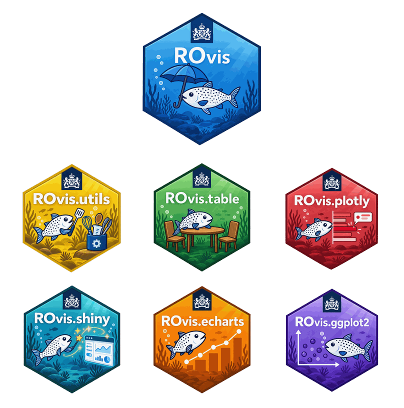

Rijksoverheid Visualisatie - umbrella package
Why ROvis
Rijksoverheid organisations need visualisations that follow the Rijkshuisstijl and meet government accessibility requirements (WCAG). This means they need to have the right colors, the right fonts, readable contrast, screen-reader-friendly output… Getting that right for every chart and table, in every project, is easy to get wrong and expensive to redo.
ROvis exists so you don’t have to solve that. It’s a family of R packages that already gets the house style and accessibility right, so teams can spend their time on the data and the story instead of re-implementing theming and accessibility from scratch. ROvis itself is an entry point, the “umbrella”. If you install it, all the packages in the family are installed as well.
The family
Meet the ROvis family members.
| Package | Role | What it gives you |
|---|---|---|
| ROvis.utils | Foundation | Rijkshuisstijl colors, fonts, scales and accessibility helpers shared by every other package |
| ROvis.ggplot2 | Visualisation |
ggplot2 plots in Rijksoverheid style |
| ROvis.plotly | Visualisation | Interactive plotly visualisations in Rijksoverheid style |
| ROvis.echarts | Visualisation |
echarts4r plots in Rijksoverheid style |
| ROvis.table | Visualisation |
gt/DT tables in Rijksoverheid style |
| ROvis.shiny | Application |
shiny UI building blocks, built on ROvis.table and ROvis.plotly
|

Each package also works standalone if you only need one visualisation library. Install ROvis when you want the whole family available at once.
Installation
Install the latest release from R-universe:
install.packages(
"ROvis",
repos = c("https://rivm-syso.r-universe.dev", "https://cloud.r-project.org")
)Install the development version from GitHub:
# install.packages("pak")
pak::pak("rivm-syso/ROvis")A version number ending in .9000 is a development version.
Usage
Loading ROvis attaches all six family packages (ROvis.utils, ROvis.table, ROvis.plotly, ROvis.shiny, ROvis.echarts, ROvis.ggplot2) and prints a startup message listing each one’s version, so you always know exactly what you’re working with.
The examples below show some basic examples of those packages. For the full overview, please visit the packages themselves and read the README and vignettes.
ROvis.utils
library(ROvis.utils)
# Get the hex code for a named RIVM color
ro_color("robijnrood")
#> [1] "#ca005d"
# Get the full categorical color palette
ro_color_categorical()ROvis.table
library(ROvis.table)
# Apply the Rijksoverheid-styled gt theme to a data frame
ro_gt_theme(head(mtcars, 5))ROvis.ggplot
library(ROvis.ggplot2)
data |>
filter(sex == "Women") |>
ggplot(aes(x = agegroup, y = n)) +
ro_gg_theme()ROvis.echarts
library(ROvis.echarts)
mtcars |>
e_charts(wt) |>
e_scatter(mpg) |>
ro_e_theme()ROvis.plotly
library(ROvis.plotly)
bar_data <- tibble::tibble(
Sex = c("Man", "Vrouw"),
n = c(1234, 1675)
)
# Use the color function for Rijksoverheid / RIVM colors
sex_colors <- c(
"Man" = ro_color("hemelblauw"),
"Vrouw" = ro_color("robijnrood")
)
# Create plotly bar chart
fig <- plot_ly(
data = bar_data,
x = ~Sex,
y = ~n,
type = "bar",
color = ~Sex,
colors = sex_colors,
text = ~paste0(
"Geslacht: <b>", Sex, "</b>",
"<br>Aantal cases: <b>",
format(round(n, 0), big.mark = ".", decimal.mark = ",", scientific = FALSE), "</b>"
),
hoverinfo = "text"
)
# Apply Rijksoverheid / RIVM theme
fig <- ro_ply_add_theme(fig, ro_ply_theme())ROvis.shiny
library(ROvis.shiny)
# Make a function for the plotly plot
plotly_function <- function(example_data) {
plotly::plot_ly(
data = example_data,
x = ~`Aantal cases`,
y = ~`Leeftijdsgroep`,
color = ~Geslacht,
type = "bar",
orientation = "h"
)
}
# Make the ui and server of the app
ui <- shiny::fluidPage(
useShinyjs(),
ro_shiny_graph_panel_ui("mod1", plotly::plotlyOutput)
)
server <- function(input, output, session) {
ro_shiny_graph_panel_server(
id = "mod1",
plot_render_fun = plotly::renderPlotly,
plot_data_fun = function() plotly_function(example_data),
data = example_data,
caption = "Aantal gevallen per leeftijdsgroep en geslacht"
)
}
shiny::shinyApp(ui = ui, server = server)Support
First point of contact for questions: ROvis team (spin@rivm.nl)
Contributing
We welcome contributions! Before you start, please read CONTRIBUTING.md. It explains how to open an issue, our git etiquette (branches, commits, pull requests and reviews) and our code standards. See CONTRIBUTORS.md for the list of contributors.
Instructions for developers
For information about R package development, check the R Packages book.
Below we describe the most important guidelines for working on ROvis.
Requirements
We use the testthat, lintr and roxygen2 package for development of tests, code style checks and automatic documentation. We also use the devtools and usethis package during development to adhere to standards for R packages and make developing easier! Install them in your Rstudio environment:
install.packages("testthat")
install.packages("lintr")
install.packages("roxygen2")
install.packages("quarto")
install.packages("pkgdown")
install.packages("devtools")
install.packages("usethis")Guidelines
Type devtools::load_all() in your console each time you start developing. This loads all dependencies and non-exported functions in the NAMESPACE. This makes developing a lot easier!
To ensure code standardization and quality, follow these guidelines: - Add tests with usethis::use_test() - Add a new package dependency to the DESCRIPTION file with usethis::use_package(). We use the min_version argument to specify a minimum version. - Add a new function dependency to the NAMESPACE with usethis::use_import_from() - Add documentation to new functions by inserting a roxygen skeleton and use devtools::document() to create automatic documentation in the man folder
Authors and acknowledgment
This R package was created by ROvis team (spin@rivm.nl).
License
The code can be re-used under license EUPL v.1.2 (see the full license linked in the sidebar). The same license applies across the whole ROvis.* family, so licensing terms stay identical whichever package you install directly.